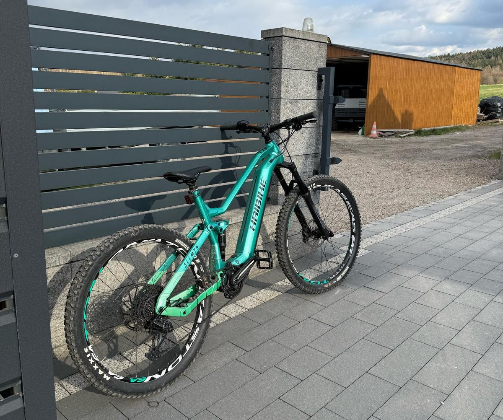
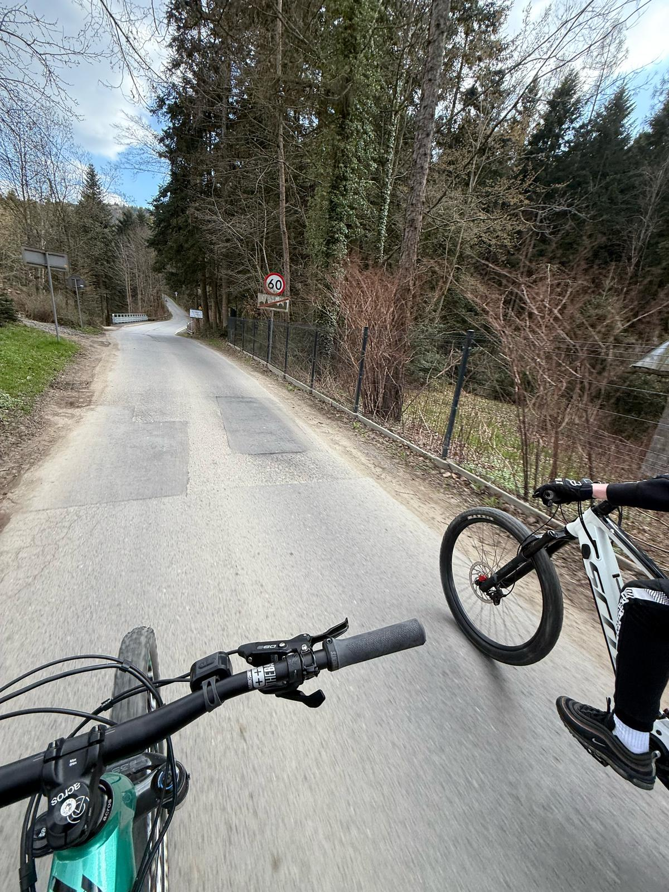

Jazda na rowerze MTB to naprawdę fajna aktywność, która pozwala połączyć sport z przygodą. Można jeździć po różnych trasach – górskich ścieżkach, w lesie, wzdłuż rzek czy w terenie pełnym kamieni i korzeni. To sprawia, że każda przejażdżka jest inna i pełna wyzwań. Często trzeba pokonać strome podjazdy, a potem zjechać w dół, co daje mnóstwo frajdy.
Rower MTB jest przystosowany do trudnych warunków, więc idealnie nadaje się do jazdy po nieutwardzonych drogach. Jeżdżąc na takim rowerze, poprawia się kondycję fizyczną, bo trzeba używać całego ciała – nogi, ręce, a także balans. Dodatkowo, to świetny sposób na spędzenie czasu na świeżym powietrzu, oderwanie się od codziennych spraw i cieszenie się naturą.
Jazda na rowerze MTB daje poczucie wolności i satysfakcji. Każda trasa to nowe wyzwanie, ale też przyjemność. To hobby, które pozwala poczuć się naprawdę dobrze – zarówno fizycznie, jak i psychicznie.


Powrót do strony głównej...